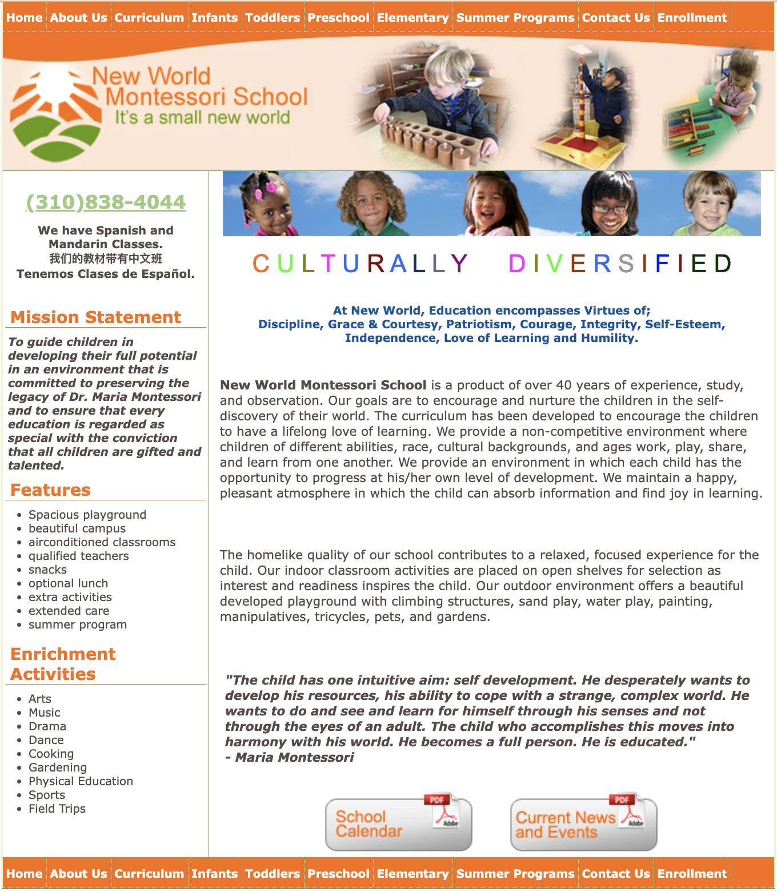

Webpage
The website I have chosen is for a preschool in Los Angeles called New World Montessori School. The site appears to be quite dated, and it doesn't look like its been updated since at least 2020.
Below, I note the problems and the accessibility concerns:
- Font not legible without zooming in.
- Clashing colors make the site loose a sense of cohesion.
- Text covers most of the screen, making the site overwhelming and cluttered.
- Menu feels hidden in header.
- Lack of search bar limits user's ability to navigate site.
- Images have dated effects, and unclean cutouts.
- Images don't have alt text.
- Low contrast makes it difficult to differentiate certain text and sections. Especially on the "CULTURALLY DIVERSIFIED" heading.
- Unordered lists.
After seeing the accesibility report, these concerns are valid.
To an average person, the issues brought up might not affect the user's experience with the site.
But in order to make the site accessible for all, these concerns are ones that will definitely be addressed in the redesign.